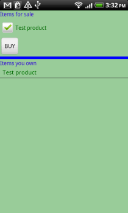
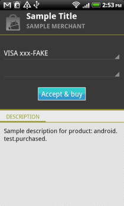
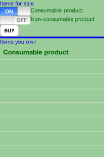
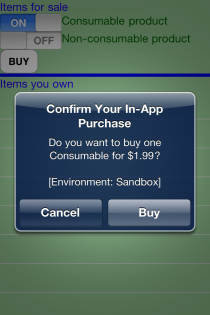
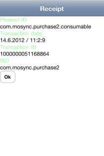

PurchaseExample
This example app demonstrates how to use the MoSync Purchase C++ Library to manage in-app purchases, transaction histories, and receipts. Some configuration steps must be completed before running this app on a device.
|  |  |  |
| Main screen on Android | Purchase screen on Android | Receipt details on Android |
|  |  |  |
| Main screen on iOS | Confirmation screen on iOS | Receipt details on iOS |
This application uses the MoSync Purchase C++ Library, and works on all platforms supported by this library (see Feature/Platform Support).
This example is included in the MoSync SDK installation in the /examples folder. For information on importing the examples into your workspace, see Importing the Examples.
Note: Before building and running this example app, you need to set your Android developer key, and the product IDs that can be purchased. Open the file config.h file in the project. You will find complete instructions for configuring the application there. Second, set up the project's provisioning profile by pointing it to the provision file -- that's the file that you get when you have registered with Apple as a developer and go through the iOS Provisioning Portal.
Behaviour
When this application is started, the MainScreen is shown.The screen consists of two main parts:
- "Buy" section with a BUY button and a list of available products for sale.
- "History" section with a list of purchased items.
From here the user can choose which products to purchase, by selecting a product (checking its corresponding check box). Tapping the BUY button initiates a purchase.
The purchase request is computed in the backend in the ApplicationController class. The ApplicationController notifies the MainScreen of all the purchase events, and displays them in dialog boxes, especially error messages.
In the code
The project is divided into several files:
- Main.cpp is the application's main entry point.
- Config.h is where you must fill in your own Android developer public key.
- MainScreen.cpp the main screen of the application, that presents a list of available products, and a purchase history list. The first section will not display to the user the productIds, but the product names, and single-item selection is ensured by check boxes assigned to each one. The developer should create it's own product list in the createProductIdList method. For now, only Android has a product added, and that is a reserved product ID for testing. The second section (history) displays the names of the purchased products in a scrollable list view. Each item is selectable, and it's selection triggers the receipt dialog with all the receipt information.
- ApplicationController.cpp the controller that handles all purchase-related events. The controller is responsible for updating the UI with all purchase events.
- Util.cpp contains utility function for the application, to detect current platform.
When you test on Android, make sure you follow the steps listed in the official help page for testing http://developer.android.com/guide/market/billing/billing_testing.html , so that you will be able to test both reserved products and your own products.
The application's flow is as follows:
- when the user selects a product and presses BUY a new Purchase object (mCurrentPurchase) is created, and automatically the controller is set as a PurchaseListener. From now on, the current purchase object will point to mCurrentPurchase, and all purchases will be held in the mPurchases vector.
- the ApplicationController class waits for productValid purchase event.
- after the event is received, the purchase is requested: mCurrentPurchase->requestPurchase().
- the ApplicationController waits for requestCompleted purchase event.
- the checkout UI is displayed, allowing the user to enter personal financial information.
- after the event is received, the MainScreen is updated and the product name appears in the history list.
- at any time, the user may select one purchased product, to get its receipt. Note that there may be a small delay in showing the receipt dialog, as the receipt validation is done asynchronously.
For a complete screencast of a similar example application, please visit our YouTube MoSync Dev Channel here.